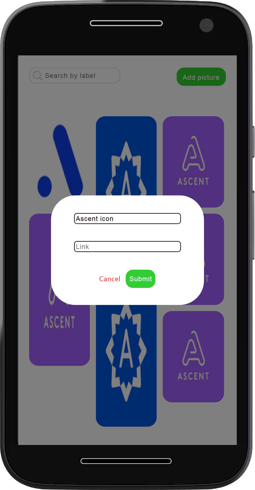

-

FULLSTACK WEB APPS
PORTFOLIO
See some of my work below (straight to business, yas.) Unless stated otherwise, all their components were done by me, and are arranged chronologically.
-
Udunkulu
Explore the Nigerian sound
A fully functional music streaming platform aimed at promoting Nigerian acts, genres and their art.
I implemented the frontend of this app with a remote Agile team of Nigerian designers and developers from a Figma design.
@https://udunkulu-app.netlify.app/
Technologies used: React | CSS3 | JavaScript/ES6

-

Musepic
Grayscale your pictures
Responsive Web app I built to easily upload and convert pictures to black and white.
Technologies used: React | CSS3 | JavaScript/ES6 | Cloudinary | NodeJS/Express
-
Memoirs
Humanizing stats of police brutality in Nigeria.
As part of an Agile team of Nigerian techies spread all over the country, I implemented the frontend of this app from a Figma design done by our design team.
This is an ongoing project. It allows users learn about the lives of people before they were murdered by SARS operatives in Nigeria using text and other media.
Did I mention it's completely responsive? All projects I work on are. :)
@https://bit.ly/memoirs4sarsvictims
Technologies used: React | CSS3

-
Learnable
Learn, get paid, work with the most amazing people and become world class.
In the role of frontend intern at Genesys Tech Hub I implemented a React app for the hub's internship program in 7 beautifully designed components that paint a vibrant picture of what it is like to work at the hub.
Woah, that's a lot, still responsive though? Yes, mobile responsive and WCAG compliant.
@https://bit.ly/learnable-clone
Technologies used: React | CSS3
-
Lyncanthrope's Log
Find out why stuff keeps happening to you.
This is a fun JavaScript console project I created to help isolate the cause of some recurrring malady, in this case, turning into a werewolf (seriously though, some of us suffer from this. But it can be configured to find out the cause of anything, like why you suddenly started forgetting your laptop charger at the damn office.)
It allows the user log in their daily events for two weeks and gives a report of the likely cause of what ails them.
@https://bit.ly/lycanthropes-log
Technologies used: JavaScript/ES6
-
Library Tracker
Not the most unique name, a helpful tool though.
This manages a library's inventory. It allows a user to and reacts when a user borrows books, returns books and/or donates books to the library.
@https://bit.ly/library-tracking-sys
Technologies used: JavaScript/ES6
-
The Poll
Make truly random moves...
This is a simple web app that makes it easier to make decisons if you're sometimes indecisive when there are several equally good options on your table(I'm talking to you if you're nodding your head.) It takes the decision from your hands and makes it for you and shows you how many times you've asked a particular question already.
Technologies used: React | CSS3 | JavaScript/ES6
I can help with...
Developing your great looking, user friendly, completely responsive website with painstaking attention to detail in record time and a no stress remote relationship.
Building sites from Figma designs and/or Product Requirements Documents (PRDs) in HTML, CSS, JavaScript/ES6, Node and JavaScript libraries like React.
Collaborating seamlessly with designers and back-end developers to build full-stack applications, especially in remote software development team.
Performing tests using test suites like Jest that considerably reduce development and debugging time while building your product.
CONTACT ME
I'm available for hire, and any pretty cool projects you want to work on.
When I'm not coding, studying some code related text or thinking through a bug, I'm catching my cruise, you know, having fun. In my own way, of course. Ahem.
I read. Fiction, non-fiction, Quora answers, research papers, any insightful piece of writing I can find on the internet and in my Dad's study, I digest them with a cup of clean water by my side for mi health. Reading is fun, DON'T GO VIBELESS ON ME NOW.
I also write about African issues and history on Vocal Africa.
If you don't see me reading or writing you can bet that I'm listening to Little Simz, Young M.A. or J. Cole or 'someone else that has sense' rapping, and you're sure to win your cash back. If you know and seriously vibe with these rappers, please hit me up, we're soul mates.
What's with the Glasses?
So, I like glasses, a lot. For years I had searched for the perfect pair that looked great on my long face. Couldn't find any I really liked.
Then without much thought I tried on my cousin's pink pair, OMG... I loved it. I love it. Still loving it. Square oversize glasses. So it's hip, classy and makes me look like I'm fun. And I want it to be known to all long faced people that a long faced person discovered her pair. Keep trying them on, b.
I could go on and on about it.
An aquiantance calls them projectors because they're large? I don't know. I have projectors on my face though. Get it? To project my personality.
Heh. Don't tell me I just made a bad joke.